Step 3.7 Flash
新的前沿是 agent 效率。
面向真实世界 agent 的高效率 Flash 模型。
多模态理解与行动｜网页与视觉搜索增强｜可靠的工具使用与编排｜agent 生态兼容
关键特性
-
原生多模态理解与行动
理解各种图像——产品 UI、文档、图表与自然场景——然后编写代码或调用工具，根据所见采取行动。
-
网页与视觉搜索增强
网页搜索覆盖更广——更多来源、更深入的追查。视觉搜索识别其他系统无法识别的内容——长尾实体、新近出现的概念。
-
可靠的工具使用与编排
驱动终端、浏览器、Office 工具、搜索及更多工具——无论运行多久都保持连贯。减少偏离，减少失效的工具调用，减少失败的运行。
-
agent 生态兼容
兼容主流执行框架（Claude Code、KiloCode、Hermes Agent、OpenClaw）和 Skills——降低集成成本，减少工作流调整。
Agent 编程
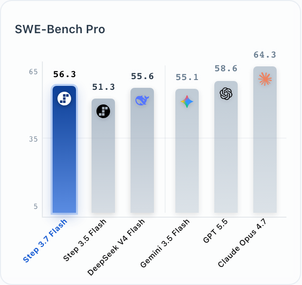
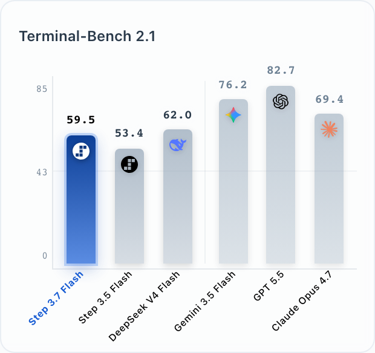
多模态
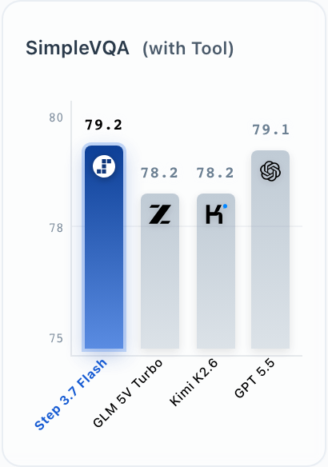
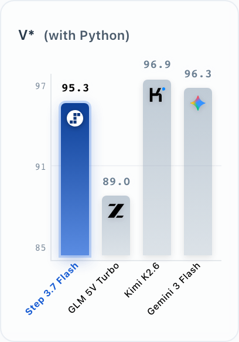
通用 Agent
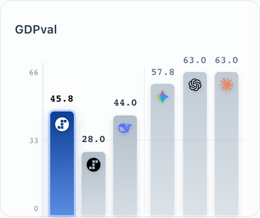
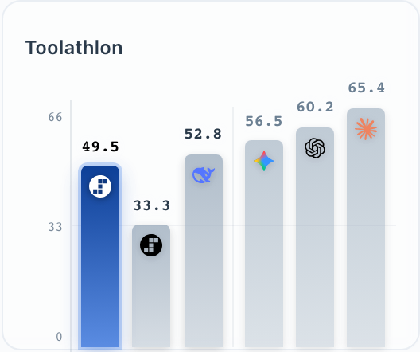
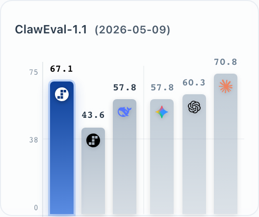
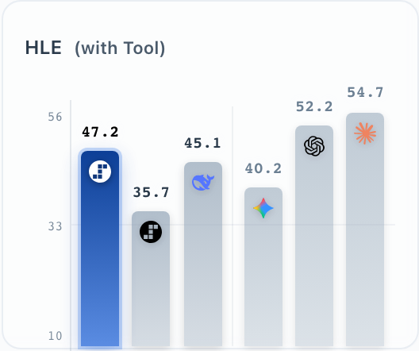
说明：对于非多模态任务，我们将比较分成两组：左侧面板将 Step 3.7 Flash 与规模相当的开源 Flash 模型 DeepSeek V4 Flash 进行比较，右侧面板则将 Step 3.7 Flash 与前沿闭源模型并列比较。具体而言，Step 3.7 Flash、Gemini 3.5 Flash、DeepSeek V4 Flash、DeepSeek V4 Pro 和 GLM 5.1 在 Terminal-Bench 2.1 上评测；DeepSeek V4 Flash 的指标来自我们的内部测试。Kimi-K2.6、GPT 5.5 和 Claude Opus 4.7 使用 Terminal-Bench 2.0 的官方报告结果。在 GDPval 上，Step 3.7 Flash 的得分通过内部成对评测获得，而对比模型的数据来自 Artificial Analysis 官方排行榜。在 Toolathlon 上，Step 3.7 Flash 的得分在内部固定版本上评测；对于其他模型，我们报告内部测试与官方测试中的最佳得分。
Agent 编程
基础模型正在从回答问题转向采取行动，而在数字世界中，行动体现为代码。编程是数字 agent 行动能力的基础，是规划—执行—观察—迭代循环最纯粹的形式，也是模型更广泛的 agent 能力发展方向的先行指标。我们在这一方面为以下模型投入了大量资源：Step 3.7 Flash。与 Step 3.5 Flash 相比，它在SWE-Bench Pro 上提升了 +5%，并在Terminal-Bench 2.1 上提升了 6.1%。
Step-SWE-Bench
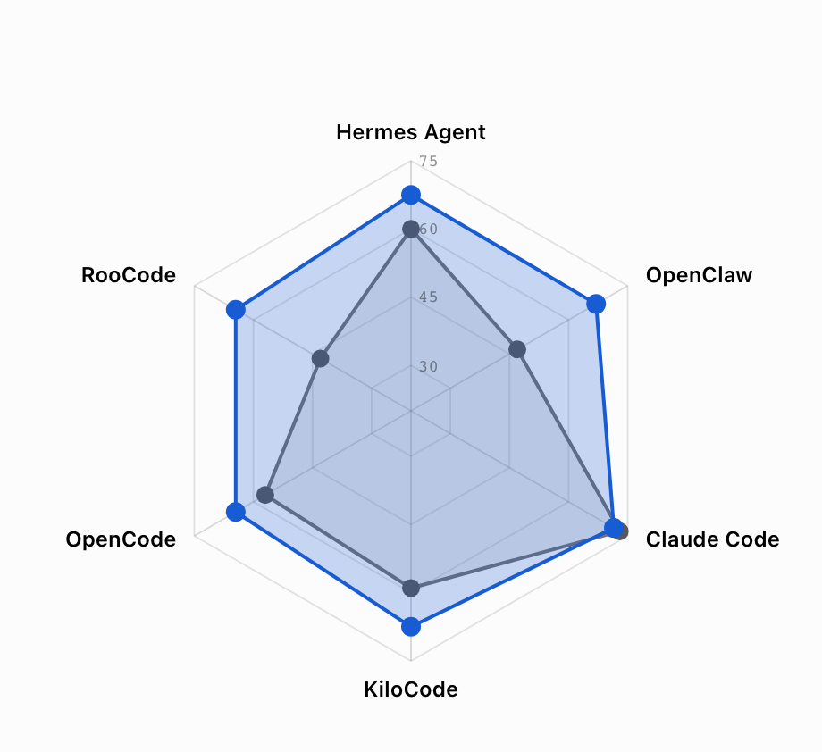
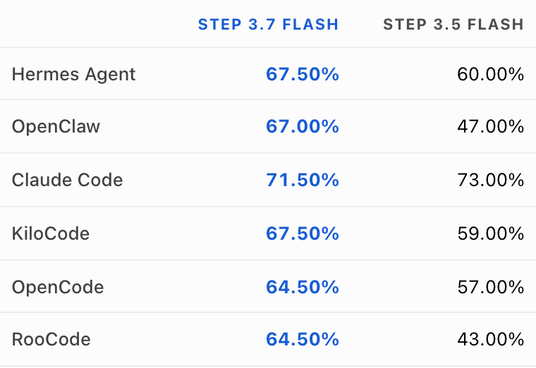
在生产环境中，编程 agent 很少仅在单一支架上运行。它们处于由不同执行框架构成的异构技术栈中，每种框架都有各自的提示约定、工具 schema 和编排模式——模型必须在所有框架上都可靠运行，才能真正发挥作用。Step 3.7 Flash在这一技术栈中的表现明显比 Step 3.5 Flash 更均衡，在我们内部的 Step-SWE-Bench 上，各执行框架之间的差距大幅缩小。
为了在保持 Flash 级效率的同时进一步提升质量，Step 3.7 Flash支持 Advisor Mode。Step 3.7 Flash端到端地主导整个轨迹——调用工具、读取结果并迭代——只有在自身判断不足的少数关键节点，例如规划或从反复失败中恢复时，才会咨询更大的顾问模型。这是 Step 对以下策略的实现：顾问策略，由 Anthropic 提出；其中小型执行者保持控制，只在必要时向前沿顾问模型求助，使大部分运行保持执行者的成本。启用 Advisor Mode 后，Step 3.7 Flash达到Claude Opus 4.6 编程性能的 97%，而每项任务成本约为其九分之一 ($0.19对比$1.76，每项任务）。
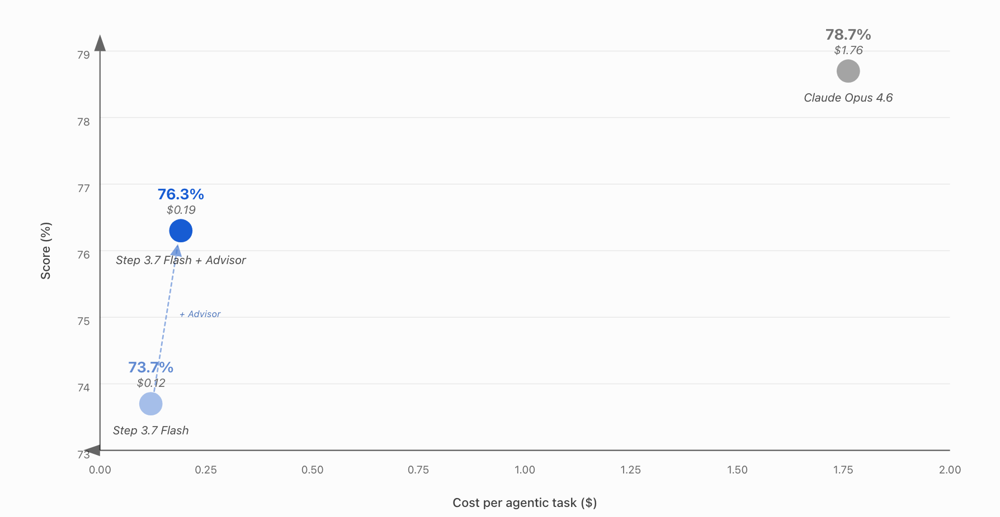
面向企业任务的强化
企业工作从根本上依赖两大关键支柱：在动态环境中自主执行任务，以及深入的领域专属垂直知识。Step 3.7 Flash专门围绕这两个方向构建并严格优化，以独立推进任务并交付生产级成果。
该模型将强大的 agent 执行能力与准确的意图理解、丰富的多模态感知相结合，顺畅地衔接理解与行动。用户可以将完整的知识工作交给 Step 3.7 Flash，相信它能够独立制定计划、搜索实时来源、提取关键信息，并流畅地编排工具，无需干预即可交付可直接使用的成果。它读取并直接处理混合输入——例如屏幕截图、复杂文档和内容密集的电子表格——同时解析视觉上下文与数字资产。这种长程任务执行能力已在多种环境中得到验证，Step 3.7 Flash 在Toolathlon 上取得 49.5%，用于多工具协调；在ClawEval-1.1 上取得 67.1%，用于真实环境中的日常自主任务执行。
从通用智能迈向真正专业能力的道路，始于真实专家的实践。通过与领域专家深入合作，我们将原生行业知识融入模型，并通过金融、会计和数据分析领域的内部基准验证其能力。这种专业能力远远超出了专门领域：Step 3.7 Flash 在GDPval 上取得 45.8%，覆盖 44 种职业；在Tau2-bench Telecom 的不同推理难度等级上通过率超过 98%。
搜索更广、更深
对于 Step 3.7 Flash 这一规模的模型，目标不是将世界上的每一条知识都装入权重，而是让模型在需要时更善于调用这些知识。因此，我们将其能力聚焦于搜索规划、证据筛选与信息综合，使搜索从外部附加功能转变为推理过程的原生组成部分。
Step 3.7 Flash 在搜索密集型基准上表现出色。它在HLE with Tools 上取得 47.20%，高于 Step 3.5 Flash 的 35.68%（纯文本），并超过 DeepSeek V4 和 Gemini 3.5 的 Flash 模型。它在BrowseComp 上达到 75.82%，接近 Claude Opus 4.7 和 GLM 5.1 等更大模型。在 DeepSearchQA 上，它的 F1 得分达到 92.82%，与总参数 1T、激活参数 32B 的 Kimi K2.6 相当。在 ResearchRubrics 上，它取得 71.68%，高于 GPT 5.5 的 61.50%，接近 Claude Opus 4.7 的 73.92%。这些结果表明，Step 3.7 Flash 将 Flash 级效率与强大的深度检索和研究能力相结合。
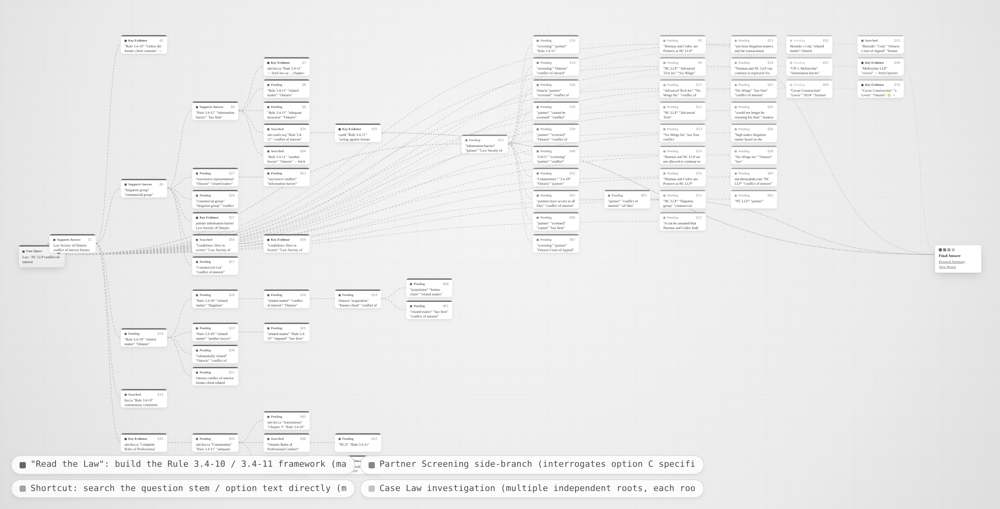
播放 ▶这些轨迹进一步体现了其搜索行为的广度与深度。在安大略省律师利益冲突案例中，它同样围绕领域专属概念扩展搜索，结合论文、课程资料、官方规则和案例分析中的证据，并识别出问题中的关键陷阱。
能够看见的 Agent
我们将Step 3.7 Flash确立为支持视觉输入的 agent 基础模型，将感知与识别从参数容量转向利用视觉工具进行 test-time scaling。作为第一步，我们增强其调用 Visual Search 工具的能力，从而弥补Step 3.7 Flash模型规模有限所造成的参数知识不足。如下表所示，在视觉识别任务中，Step 3.7 Flash使用 Visual Search 达到了与规模为其五倍的模型相当的性能。
使用 Visual Search 进行视觉识别
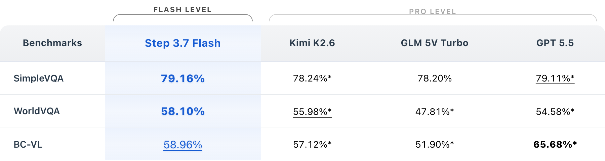
- * 表示自行测试的得分。
对于更广泛的挑战性视觉任务，这些任务要求对高分辨率图像进行细粒度感知或具备视觉推理能力，例如 V*、HR-Bench 和 VisualProbe，我们赋予模型更丰富的动作空间，使其能够与图像交互，包括裁切、放大和缩小，以及绘制像素或边界框。这些工具以统一的代码接口实现，在该领域通常称为Python 工具。借助 Python，Step 3.7 Flash在这些基准上取得了极其出色的表现。
使用 Python 工具进行视觉感知
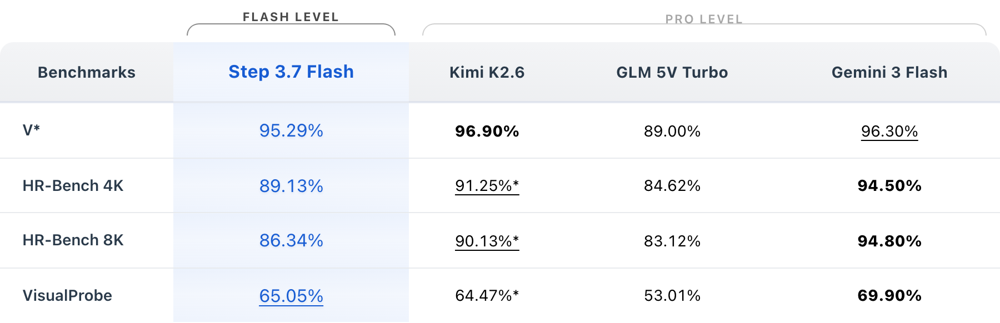
- * 表示自行测试的得分。
- GLM 的结果与 GLM 官方人员核对一致，使用了裁切、搜索等工具。
一个特别有趣的发现是，视觉工具与其他工具之间涌现出了组合泛化能力。在测试期间，Step 3.7 Flash无缝组合视觉与非视觉工具完成复杂任务，尽管训练中从未明确引导它以这种组合方式使用工具。
使用 Python 工具进行视觉推理
视觉与非视觉工具的组合使用
操作图形用户界面（GUI）是 agent 模型的另一项基础视觉能力——许多真实世界任务发生在聊天框和 CLI 之外，要求 agent 能看见、点击并验证。我们为Step 3.7 Flash扩展了 GUI 操作能力，尤其是手机操作技术栈，使其能够跨多个应用完成长程任务。在 Android Daily 基准上，Step 3.7 Flash相较于去年的Step-GUI，在稳定性、鲁棒性和长程任务完成方面取得大幅提升，并领先于其他规模更大的模型。
Android Daily 基准得分
- * 表示自行测试的得分。
- Android Daily: https://arxiv.org/abs/2605.27761
我们在视觉工具中观察到的组合模式也出现在这里：在下面的案例中，模型编写前端代码后，自主转向 GUI 测试刚生成的页面——检查渲染输出、操作交互元素，并根据所见迭代自身代码。同样，这种代码与 GUI 的组合行为在训练期间从未被明确演示或奖励，却在测试时的使用中稳健地涌现。
GUI 操作
基准
在基准表中，我们对当今表现最好的开源模型进行了详细的并列比较。在广泛的指标上，Step 3.7 Flash 始终表现出色。我们的评测聚焦于三个核心维度——推理、编程和 Agent 能力。
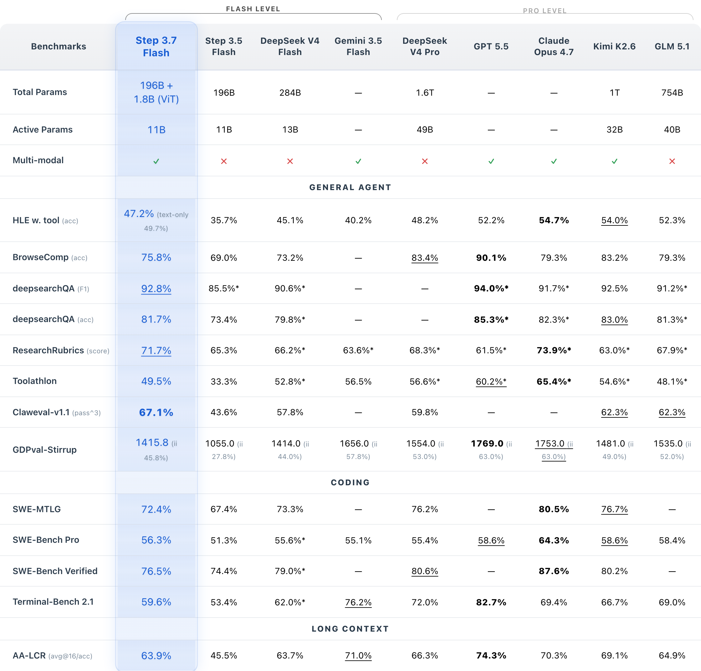
- “—”表示得分未公开或未经测试。* 表示自行测试的得分。
- Step 3.7 Flash、Gemini 3.5 Flash、DeepSeek V4 Flash、DeepSeek V4 Pro 和 GLM 5.1 在 Terminal-Bench 2.1 上评测；DeepSeek V4 Flash 的指标来自我们的内部测试。Kimi-K2.6、GPT 5.5 和 Claude Opus 4.7 使用 Terminal-Bench 2.0 的官方报告结果。
- Android Daily: https://arxiv.org/abs/2605.27761
可用性、部署与生态
可用性
Step 3.7 Flash 已在 StepFun 开放平台上线——platform.stepfun.ai（全球）和platform.stepfun.com（中国）、OpenRouter 和 NVIDIA NIM。StepFun 也正在与 DeepInfra、Fireworks AI 和 Modal 合作，即将进一步扩展可用范围。
部署
Step 3.7 Flash 支持在云端、数据中心及本地环境中灵活部署。对于大规模生产和企业用例，Step 3.7 Flash 可部署在现代数据中心基础设施上。在本地与工作站场景中，它也能运行于高内存设备，例如 NVIDIA DGX Station、基于 AMD Ryzen AI Max+ 395 的系统，以及配备至少 128GB 统一内存的 Mac Studio / Macbook Pro。
生态
Step 3.7 Flash 已获得主流开源推理与模型开发基础设施的支持。在推理与服务方面，开发者可以使用 vLLM、SGLang、Hugging Face Transformers 和 llama.cpp。在模型开发与定制工作流方面，NVIDIA Nemo 生态已支持 StepFun 模型，包括 AutoModel、Megatron Core 和 Megatron Bridge。Step 3.7 Flash 也作为 NVIDIA NIM 推理微服务提供，支持本地、云端或混合部署。